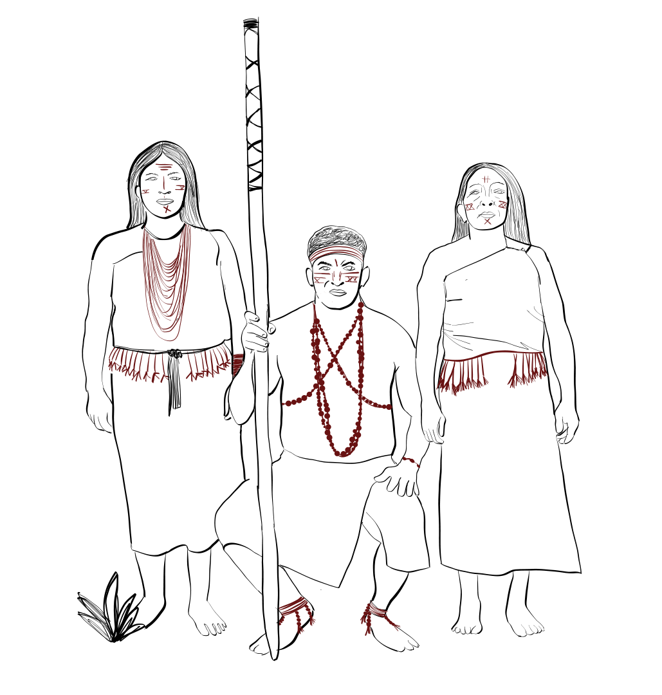

After walking for a long time, Miguel came across an Indigenous community. He felt afraid because he did not know who they were or how they would react to a stranger. Hoping to show that he meant no harm, he offered them the rabbit he had hunted as a peace offering.